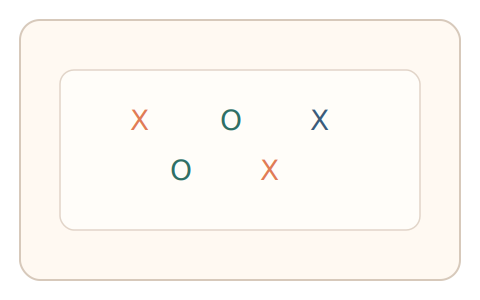
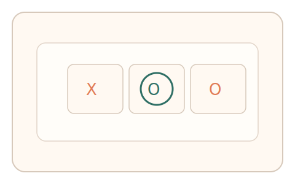
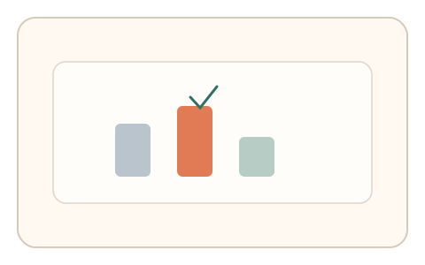

#62
视觉思考范式：Gestalt/对称/频率
已扩展
特征绑定错配
快速闪现颜色与形状组合后遮罩，利用绑定错觉错误分布与反应时验证真实性。
概念原文
快速闪现红/绿 X/O 组合后遮罩，要求选择“刚出现的组合”。记录典型绑定错觉的错误模式与反应时。
以人类特征绑定误差分布作为生理证据。
研究背景
特征绑定在快速呈现时容易产生错配（illusory conjunction），错误分布与反应时具有稳定模式。通过测量这些错误结构可获得可靠的行为信号。
核心机制
- 快速闪现红/绿 X/O 组合后遮罩。
- 用户选择刚出现的组合。
- 记录错误类型与反应时。
- 分析绑定错觉的误差分布。
用户流程
- 步骤 1：用户看到短时闪现的组合。
- 步骤 2：遮罩后选择出现过的组合。
- 步骤 3：系统分析错误分布并判定。
判定信号
绑定错配错误分布
人类在快速呈现下常出现特定错配。
反应时与错配类型
真实判断的反应时与错误类型存在关联。
判定逻辑
拟合错配错误分布与反应时结构，要求符合人类模式；错误过低或分布异常判异常。
对抗面
- 脚本逐帧读取刺激并直接选择
- 重放真实用户的选择序列
防御与缓解
- 随机化组合与呈现位置
- 调整遮罩时序并加入噪声
- 叠加鼠标轨迹与微时序信号进行多信号验证
可达性与风险
提供更长呈现时间或减少组合数量，避免对视觉敏感用户造成负担。
- 短时闪现导致误差增大
- 设备刷新率影响呈现精度
可视化状态

状态 1：快速组合
红绿 X/O 组合短时闪现。

状态 2：组合选择
用户选择刚出现的组合。

状态 3：错配判定
分析错误分布与反应时。
参考资料
Illusory conjunction
说明特征绑定错觉与错误分布。
Feature integration theory
说明特征绑定与注意力机制。